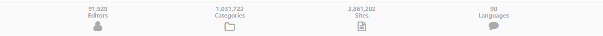

快速开始
一个简单的例子
作为演示， 我们将爬取网站dmoz首页(可能需要梯子)下方的一些统计数据， 如图所示：

首先准备好需要爬取的链接，我们把目标连接放入到urls.txt中:
https://dmoz-odp.org
然后准备好一个简单的配置文件（myconfig.cfg）：
[Globals]
run_mode = once
[PipeLine]
url = FileUrls
request = HttpRequest
parser = DmozParser
store = CsvStore
[url]
file_name = urls.txt
[store]
file_name = dmoz.csv
最后在命令行启动spydy:
$ spydy myconfig.cfg
Your pipeline looks like :
FileUrls ⇨ HttpRequest ⇨ DmozParser ⇨ CsvStore
接着， 你会发现在当前目录下面出现了dmoz.csv，并且在dmoz.csv文件中多了一行我们想要获取的数据。
发生了什么？
spydy的工作流在设计上参考了Unix管道， 定义在配置文件[PipeLine]下面的参数其实就是我们spydy会顺序执行的各个步骤,比如在上面的例子中, spydy的工作流是这样的：
FileUrls -> HttpRequest -> DmozParser -> CsvStore
注意： 在pipeline中， 每个步骤的产出就是下一步的输入。
当然， 每个步骤可能需要一些参数， 比如FileUrls需要file_name参数， 所以需要单独地在[url]下面配置好file_name参数(配置文件中的section名称即为P0ipeline中的步骤名)。
配置文件中[Globals]下面可以设置spydy的全局参数， 比如这里的run_mode被设置了once， 所以在上面例子中spydy只会将整个工作流执行一次。
一个复杂点的例子
在真实开发开发场景中， 我们希望爬虫能够支持并发， 同时兼容用户的自定模块。作为演示， 我们用spydy来开发一个稍微复杂一点的爬虫应用：
- 准备一个可以访问的redis键值存储数据库，当然我们需要在Redis中写入一些URL：
from spydy.urls import RedisListUrls
r = RedisListUrls(list_name="/spider/testurls") # 默认localhost
for _ in range(10):
r.push("https://www.dmoz-odp.org/")
-
一个可以访问的关系型数据， 在数据库建立一个名为dmoz的database， 以及一个名为stats的表， 表中需要包含editors, categories, sites, languages这四个字段（都是字符串类型）。
-
准备好一个文件夹(mypkg), 用于存储用户的自定义模块。mypkg的目录长这样：
- mypkg
- __init__.py
- filters.py
在filters.py（我们的自定义模块， 用来过滤解析结果）中写入：
from spydy.filters import CommonFilter
class Myfilter(CommonFilter):
def drops(self):
return ["editors"]
def mutates(self, items):
print("befor_filter: {}".format(items))
items["sites"] = "0"
print("after_filter: {}".format(items))
return items
最后， 准备好我们的spydy配置文件(myconfig2.cfg, 与mypkg文件夹处于同一级目录)：
[Globals]
run_mode = async_forever
nworkers = 4
[PipeLine]
url = RedisListUrls
request = AsyncHttpRequest
parser = DmozParser
filter = file:mypkg.filters.Myfilter
store = DbStore
[url]
host = localhost
port = 6379
list_name = /spider/testurls
[store]
connection_url = sqlite:///./tests/files/dmoz.db
table_name = stats
当然， 你的redis连接和数据库连接(使用sqlalchemy的定义方式)和上面的未必相同， 请根据自己的情况进行修改。
万事俱备， 让我们运行spydy吧：
$ spydy myconfig2.cfg
Your pipeline looks like :
RedisListUrls ⇨ AsyncHttpRequest ⇨ DmozParser ⇨ Myfilter ⇨ DbStore
befor_mutate: {'categories': '1,031,722', 'languages': '90', 'sites': '3,861,202'}
after_mutate: {'categories': '1,031,722', 'languages': '90', 'sites': '0'}
befor_mutate: {'categories': '1,031,722', 'languages': '90', 'sites': '3,861,202'}
after_mutate: {'categories': '1,031,722', 'languages': '90', 'sites': '0'}
befor_mutate: {'categories': '1,031,722', 'languages': '90', 'sites': '3,861,202'}
after_mutate: {'categories': '1,031,722', 'languages': '90', 'sites': '0'}
befor_mutate: {'categories': '1,031,722', 'languages': '90', 'sites': '3,861,202'}
after_mutate: {'categories': '1,031,722', 'languages': '90', 'sites': '0'}
...
运行结束， 可以到我们的数据库中检查一下是不是成功存储了刚才爬取的数据。
Tips:
通常可以通过spydy组件的名称来确定一个组件是不是支持异步的，
如果组件带有Async前缀(比如上面的AsyncHttpRequest)，
那么该组件就是支持异步的。